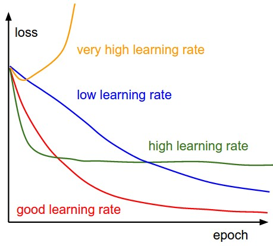
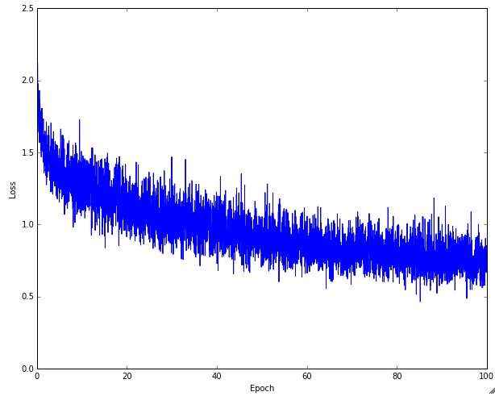
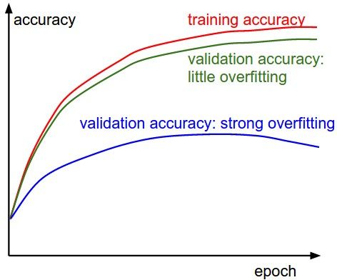
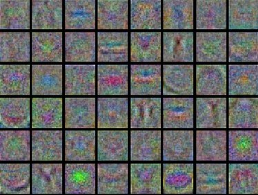
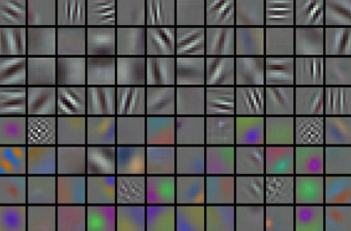
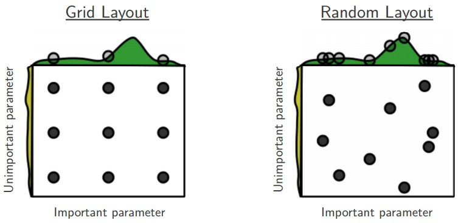

Table of Contents:
Learning
In the previous sections we’ve discussed the static parts of a Neural
Networks: how we can set up the network connectivity, the data, and the
loss function. This section is devoted to the dynamics, or in other
words, the process of learning the parameters and finding good
hyperparameters.
Gradient Checks
In theory, performing a gradient check is as simple as comparing the
analytic gradient to the numerical gradient. In practice, the process is
much more involved and error prone. Here are some tips, tricks, and
issues to watch out for:
Use the centered formula. The formula you may have
seen for the finite difference approximation when evaluating the
numerical gradient looks as follows:
\[
\frac{df(x)}{dx} = \frac{f(x + h) - f(x)}{h} \hspace{0.1in} \text{(bad,
do not use)}
\]
where \(h\) is a very small number, in practice approximately 1e-5 or
so. In practice, it turns out that it is much better to use the
centered difference formula of the form:
\[
\frac{df(x)}{dx} = \frac{f(x + h) - f(x - h)}{2h} \hspace{0.1in}
\text{(use instead)}
\]
This requires you to evaluate the loss function twice to check every
single dimension of the gradient (so it is about 2 times as expensive),
but the gradient approximation turns out to be much more precise. To see
this, you can use Taylor expansion of \(f(x+h)\) and \(f(x-h)\) and
verify that the first formula has an error on order of \(O(h)\), while
the second formula only has error terms on order of \(O(h^2)\) (i.e. it
is a second order approximation).
Use relative error for the comparison. What are the
details of comparing the numerical gradient \(f’_n\) and analytic
gradient \(f’_a\)? That is, how do we know if the two are not
compatible? You might be temped to keep track of the difference \(f’_a -
f’_n \) or its square and define the gradient check as failed if that
difference is above a threshold. However, this is problematic. For
example, consider the case where their difference is 1e-4. This seems
like a very appropriate difference if the two gradients are about 1.0,
so we’d consider the two gradients to match. But if the gradients were
both on order of 1e-5 or lower, then we’d consider 1e-4 to be a huge
difference and likely a failure. Hence, it is always more appropriate to
consider the relative error:
\[
\frac{\mid f'_a - f'_n \mid}{\max(\mid f'_a \mid, \mid
f'_n \mid)}
\]
which considers their ratio of the differences to the ratio of the
absolute values of both gradients. Notice that normally the relative
error formula only includes one of the two terms (either one), but I
prefer to max (or add) both to make it symmetric and to prevent dividing
by zero in the case where one of the two is zero (which can often
happen, especially with ReLUs). However, one must explicitly keep track
of the case where both are zero and pass the gradient check in that edge
case. In practice:
- relative error > 1e-2 usually means the gradient is probably
wrong
- 1e-2 > relative error > 1e-4 should make you feel
uncomfortable
- 1e-4 > relative error is usually okay for objectives with kinks.
But if there are no kinks (e.g. use of tanh nonlinearities and softmax),
then 1e-4 is too high.
- 1e-7 and less you should be happy.
Also keep in mind that the deeper the network, the higher the
relative errors will be. So if you are gradient checking the input data
for a 10-layer network, a relative error of 1e-2 might be okay because
the errors build up on the way. Conversely, an error of 1e-2 for a
single differentiable function likely indicates incorrect gradient.
Use double precision. A common pitfall is using
single precision floating point to compute gradient check. It is often
that case that you might get high relative errors (as high as 1e-2) even
with a correct gradient implementation. In my experience I’ve sometimes
seen my relative errors plummet from 1e-2 to 1e-8 by switching to double
precision.
Stick around active range of floating point. It’s a
good idea to read through “What
Every Computer Scientist Should Know About Floating-Point
Arithmetic”, as it may demystify your errors and enable you to write
more careful code. For example, in neural nets it can be common to
normalize the loss function over the batch. However, if your gradients
per datapoint are very small, then additionally dividing them
by the number of data points is starting to give very small numbers,
which in turn will lead to more numerical issues. This is why I like to
always print the raw numerical/analytic gradient, and make sure that the
numbers you are comparing are not extremely small (e.g. roughly 1e-10
and smaller in absolute value is worrying). If they are you may want to
temporarily scale your loss function up by a constant to bring them to a
“nicer” range where floats are more dense - ideally on the order of 1.0,
where your float exponent is 0.
Kinks in the objective. One source of inaccuracy to
be aware of during gradient checking is the problem of kinks.
Kinks refer to non-differentiable parts of an objective function,
introduced by functions such as ReLU (\(max(0,x)\)), or the SVM loss,
Maxout neurons, etc. Consider gradient checking the ReLU function at \(x
= -1e6\). Since \(x < 0\), the analytic gradient at this point is
exactly zero. However, the numerical gradient would suddenly compute a
non-zero gradient because \(f(x+h)\) might cross over the kink (e.g. if
\(h > 1e-6\)) and introduce a non-zero contribution. You might think
that this is a pathological case, but in fact this case can be very
common. For example, an SVM for CIFAR-10 contains up to 450,000
\(max(0,x)\) terms because there are 50,000 examples and each example
yields 9 terms to the objective. Moreover, a Neural Network with an SVM
classifier will contain many more kinks due to ReLUs.
Note that it is possible to know if a kink was crossed in the
evaluation of the loss. This can be done by keeping track of the
identities of all “winners” in a function of form \(max(x,y)\); That is,
was x or y higher during the forward pass. If the identity of at least
one winner changes when evaluating \(f(x+h)\) and then \(f(x-h)\), then
a kink was crossed and the numerical gradient will not be exact.
Use only few datapoints. One fix to the above
problem of kinks is to use fewer datapoints, since loss functions that
contain kinks (e.g. due to use of ReLUs or margin losses etc.) will have
fewer kinks with fewer datapoints, so it is less likely for you to cross
one when you perform the finite different approximation. Moreover, if
your gradcheck for only ~2 or 3 datapoints then you would almost
certainly gradcheck for an entire batch. Using very few datapoints also
makes your gradient check faster and more efficient.
Be careful with the step size h. It is not
necessarily the case that smaller is better, because when \(h\) is much
smaller, you may start running into numerical precision problems.
Sometimes when the gradient doesn’t check, it is possible that you
change \(h\) to be 1e-4 or 1e-6 and suddenly the gradient will be
correct. This wikipedia
article contains a chart that plots the value of h
on the x-axis and the numerical gradient error on the y-axis.
Gradcheck during a “characteristic” mode of
operation. It is important to realize that a gradient check is
performed at a particular (and usually random), single point in the
space of parameters. Even if the gradient check succeeds at that point,
it is not immediately certain that the gradient is correctly implemented
globally. Additionally, a random initialization might not be the most
“characteristic” point in the space of parameters and may in fact
introduce pathological situations where the gradient seems to be
correctly implemented but isn’t. For instance, an SVM with very small
weight initialization will assign almost exactly zero scores to all
datapoints and the gradients will exhibit a particular pattern across
all datapoints. An incorrect implementation of the gradient could still
produce this pattern and not generalize to a more characteristic mode of
operation where some scores are larger than others. Therefore, to be
safe it is best to use a short burn-in time during
which the network is allowed to learn and perform the gradient check
after the loss starts to go down. The danger of performing it at the
first iteration is that this could introduce pathological edge cases and
mask an incorrect implementation of the gradient.
Don’t let the regularization overwhelm the data. It
is often the case that a loss function is a sum of the data loss and the
regularization loss (e.g. L2 penalty on weights). One danger to be aware
of is that the regularization loss may overwhelm the data loss, in which
case the gradients will be primarily coming from the regularization term
(which usually has a much simpler gradient expression). This can mask an
incorrect implementation of the data loss gradient. Therefore, it is
recommended to turn off regularization and check the data loss alone
first, and then the regularization term second and independently. One
way to perform the latter is to hack the code to remove the data loss
contribution. Another way is to increase the regularization strength so
as to ensure that its effect is non-negligible in the gradient check,
and that an incorrect implementation would be spotted.
Remember to turn off dropout/augmentations. When
performing gradient check, remember to turn off any non-deterministic
effects in the network, such as dropout, random data augmentations, etc.
Otherwise these can clearly introduce huge errors when estimating the
numerical gradient. The downside of turning off these effects is that
you wouldn’t be gradient checking them (e.g. it might be that dropout
isn’t backpropagated correctly). Therefore, a better solution might be
to force a particular random seed before evaluating both \(f(x+h)\) and
\(f(x-h)\), and when evaluating the analytic gradient.
Check only few dimensions. In practice the gradients
can have sizes of million parameters. In these cases it is only
practical to check some of the dimensions of the gradient and assume
that the others are correct. Be careful: One issue to
be careful with is to make sure to gradient check a few dimensions for
every separate parameter. In some applications, people combine the
parameters into a single large parameter vector for convenience. In
these cases, for example, the biases could only take up a tiny number of
parameters from the whole vector, so it is important to not sample at
random but to take this into account and check that all parameters
receive the correct gradients.
Before learning:
sanity checks Tips/Tricks
Here are a few sanity checks you might consider running before you
plunge into expensive optimization:
- Look for correct loss at chance performance. Make
sure you’re getting the loss you expect when you initialize with small
parameters. It’s best to first check the data loss alone (so set
regularization strength to zero). For example, for CIFAR-10 with a
Softmax classifier we would expect the initial loss to be 2.302, because
we expect a diffuse probability of 0.1 for each class (since there are
10 classes), and Softmax loss is the negative log probability of the
correct class so: -ln(0.1) = 2.302. For The Weston Watkins SVM, we
expect all desired margins to be violated (since all scores are
approximately zero), and hence expect a loss of 9 (since margin is 1 for
each wrong class). If you’re not seeing these losses there might be
issue with initialization.
- As a second sanity check, increasing the regularization strength
should increase the loss
- Overfit a tiny subset of data. Lastly and most
importantly, before training on the full dataset try to train on a tiny
portion (e.g. 20 examples) of your data and make sure you can achieve
zero cost. For this experiment it’s also best to set regularization to
zero, otherwise this can prevent you from getting zero cost. Unless you
pass this sanity check with a small dataset it is not worth proceeding
to the full dataset. Note that it may happen that you can overfit very
small dataset but still have an incorrect implementation. For instance,
if your datapoints’ features are random due to some bug, then it will be
possible to overfit your small training set but you will never notice
any generalization when you fold it your full dataset.
Babysitting the learning
process
There are multiple useful quantities you should monitor during
training of a neural network. These plots are the window into the
training process and should be utilized to get intuitions about
different hyperparameter settings and how they should be changed for
more efficient learning.
The x-axis of the plots below are always in units of epochs, which
measure how many times every example has been seen during training in
expectation (e.g. one epoch means that every example has been seen
once). It is preferable to track epochs rather than iterations since the
number of iterations depends on the arbitrary setting of batch size.
Loss function
The first quantity that is useful to track during training is the
loss, as it is evaluated on the individual batches during the forward
pass. Below is a cartoon diagram showing the loss over time, and
especially what the shape might tell you about the learning rate:


<b>Left:</b> A cartoon depicting the effects of different learning rates. With low learning rates the improvements will be linear. With high learning rates they will start to look more exponential. Higher learning rates will decay the loss faster, but they get stuck at worse values of loss (green line). This is because there is too much "energy" in the optimization and the parameters are bouncing around chaotically, unable to settle in a nice spot in the optimization landscape. <b>Right:</b> An example of a typical loss function over time, while training a small network on CIFAR-10 dataset. This loss function looks reasonable (it might indicate a slightly too small learning rate based on its speed of decay, but it's hard to say), and also indicates that the batch size might be a little too low (since the cost is a little too noisy).
The amount of “wiggle” in the loss is related to the batch size. When
the batch size is 1, the wiggle will be relatively high. When the batch
size is the full dataset, the wiggle will be minimal because every
gradient update should be improving the loss function monotonically
(unless the learning rate is set too high).
Some people prefer to plot their loss functions in the log domain.
Since learning progress generally takes an exponential form shape, the
plot appears as a slightly more interpretable straight line, rather than
a hockey stick. Additionally, if multiple cross-validated models are
plotted on the same loss graph, the differences between them become more
apparent.
Sometimes loss functions can look funny lossfunctions.tumblr.com.
Train/Val accuracy
The second important quantity to track while training a classifier is
the validation/training accuracy. This plot can give you valuable
insights into the amount of overfitting in your model:

The gap between the training and validation accuracy indicates the amount of overfitting. Two possible cases are shown in the diagram on the left. The blue validation error curve shows very small validation accuracy compared to the training accuracy, indicating strong overfitting (note, it's possible for the validation accuracy to even start to go down after some point). When you see this in practice you probably want to increase regularization (stronger L2 weight penalty, more dropout, etc.) or collect more data. The other possible case is when the validation accuracy tracks the training accuracy fairly well. This case indicates that your model capacity is not high enough: make the model larger by increasing the number of parameters.
Ratio of weights:updates
The last quantity you might want to track is the ratio of the update
magnitudes to the value magnitudes. Note: updates, not the raw
gradients (e.g. in vanilla sgd this would be the gradient multiplied by
the learning rate). You might want to evaluate and track this ratio for
every set of parameters independently. A rough heuristic is that this
ratio should be somewhere around 1e-3. If it is lower than this then the
learning rate might be too low. If it is higher then the learning rate
is likely too high. Here is a specific example:
# assume parameter vector W and its gradient vector dW
param_scale = np.linalg.norm(W.ravel())
update = -learning_rate*dW # simple SGD update
update_scale = np.linalg.norm(update.ravel())
W += update # the actual update
print update_scale / param_scale # want ~1e-3
Instead of tracking the min or the max, some people prefer to compute
and track the norm of the gradients and their updates instead. These
metrics are usually correlated and often give approximately the same
results.
Activation /
Gradient distributions per layer
An incorrect initialization can slow down or even completely stall
the learning process. Luckily, this issue can be diagnosed relatively
easily. One way to do so is to plot activation/gradient histograms for
all layers of the network. Intuitively, it is not a good sign to see any
strange distributions - e.g. with tanh neurons we would like to see a
distribution of neuron activations between the full range of [-1,1],
instead of seeing all neurons outputting zero, or all neurons being
completely saturated at either -1 or 1.
First-layer Visualizations
Lastly, when one is working with image pixels it can be helpful and
satisfying to plot the first-layer features visually:


Examples of visualized weights for the first layer of a neural network. <b>Left</b>: Noisy features indicate could be a symptom: Unconverged network, improperly set learning rate, very low weight regularization penalty. <b>Right:</b> Nice, smooth, clean and diverse features are a good indication that the training is proceeding well.
Parameter updates
Once the analytic gradient is computed with backpropagation, the
gradients are used to perform a parameter update. There are several
approaches for performing the update, which we discuss next.
We note that optimization for deep networks is currently a very
active area of research. In this section we highlight some established
and common techniques you may see in practice, briefly describe their
intuition, but leave a detailed analysis outside of the scope of the
class. We provide some further pointers for an interested reader.
SGD and bells and whistles
Vanilla update. The simplest form of update is to
change the parameters along the negative gradient direction (since the
gradient indicates the direction of increase, but we usually wish to
minimize a loss function). Assuming a vector of parameters
x and the gradient dx, the simplest update has
the form:
# Vanilla update
x += - learning_rate * dx
where learning_rate is a hyperparameter - a fixed
constant. When evaluated on the full dataset, and when the learning rate
is low enough, this is guaranteed to make non-negative progress on the
loss function.
Momentum update is another approach that almost
always enjoys better converge rates on deep networks. This update can be
motivated from a physical perspective of the optimization problem. In
particular, the loss can be interpreted as the height of a hilly terrain
(and therefore also to the potential energy since \(U = mgh\) and
therefore \( U h \) ). Initializing the parameters with random numbers
is equivalent to setting a particle with zero initial velocity at some
location. The optimization process can then be seen as equivalent to the
process of simulating the parameter vector (i.e. a particle) as rolling
on the landscape.
Since the force on the particle is related to the gradient of
potential energy (i.e. \(F = - U \) ), the force felt
by the particle is precisely the (negative) gradient of
the loss function. Moreover, \(F = ma \) so the (negative) gradient is
in this view proportional to the acceleration of the particle. Note that
this is different from the SGD update shown above, where the gradient
directly integrates the position. Instead, the physics view suggests an
update in which the gradient only directly influences the velocity,
which in turn has an effect on the position:
# Momentum update
v = mu * v - learning_rate * dx # integrate velocity
x += v # integrate position
Here we see an introduction of a v variable that is
initialized at zero, and an additional hyperparameter (mu).
As an unfortunate misnomer, this variable is in optimization referred to
as momentum (its typical value is about 0.9), but its physical
meaning is more consistent with the coefficient of friction.
Effectively, this variable damps the velocity and reduces the kinetic
energy of the system, or otherwise the particle would never come to a
stop at the bottom of a hill. When cross-validated, this parameter is
usually set to values such as [0.5, 0.9, 0.95, 0.99]. Similar to
annealing schedules for learning rates (discussed later, below),
optimization can sometimes benefit a little from momentum schedules,
where the momentum is increased in later stages of learning. A typical
setting is to start with momentum of about 0.5 and anneal it to 0.99 or
so over multiple epochs.
With Momentum update, the parameter vector will build up velocity in
any direction that has consistent gradient.
Nesterov Momentum is a slightly different version of
the momentum update that has recently been gaining popularity. It enjoys
stronger theoretical converge guarantees for convex functions and in
practice it also consistenly works slightly better than standard
momentum.
The core idea behind Nesterov momentum is that when the current
parameter vector is at some position x, then looking at the
momentum update above, we know that the momentum term alone
(i.e. ignoring the second term with the gradient) is about to nudge the
parameter vector by mu * v. Therefore, if we are about to
compute the gradient, we can treat the future approximate position
x + mu * v as a “lookahead” - this is a point in the
vicinity of where we are soon going to end up. Hence, it makes sense to
compute the gradient at x + mu * v instead of at the
“old/stale” position x.

Nesterov momentum. Instead of evaluating gradient at the current position (red circle), we know that our momentum is about to carry us to the tip of the green arrow. With Nesterov momentum we therefore instead evaluate the gradient at this "looked-ahead" position.
That is, in a slightly awkward notation, we would like to do the
following:
x_ahead = x + mu * v
# evaluate dx_ahead (the gradient at x_ahead instead of at x)
v = mu * v - learning_rate * dx_ahead
x += v
However, in practice people prefer to express the update to look as
similar to vanilla SGD or to the previous momentum update as possible.
This is possible to achieve by manipulating the update above with a
variable transform x_ahead = x + mu * v, and then
expressing the update in terms of x_ahead instead of
x. That is, the parameter vector we are actually storing is
always the ahead version. The equations in terms of x_ahead
(but renaming it back to x) then become:
v_prev = v # back this up
v = mu * v - learning_rate * dx # velocity update stays the same
x += -mu * v_prev + (1 + mu) * v # position update changes form
We recommend this further reading to understand the source of these
equations and the mathematical formulation of Nesterov’s Accelerated
Momentum (NAG):
Annealing the learning rate
In training deep networks, it is usually helpful to anneal the
learning rate over time. Good intuition to have in mind is that with a
high learning rate, the system contains too much kinetic energy and the
parameter vector bounces around chaotically, unable to settle down into
deeper, but narrower parts of the loss function. Knowing when to decay
the learning rate can be tricky: Decay it slowly and you’ll be wasting
computation bouncing around chaotically with little improvement for a
long time. But decay it too aggressively and the system will cool too
quickly, unable to reach the best position it can. There are three
common types of implementing the learning rate decay:
- Step decay: Reduce the learning rate by some factor
every few epochs. Typical values might be reducing the learning rate by
a half every 5 epochs, or by 0.1 every 20 epochs. These numbers depend
heavily on the type of problem and the model. One heuristic you may see
in practice is to watch the validation error while training with a fixed
learning rate, and reduce the learning rate by a constant (e.g. 0.5)
whenever the validation error stops improving.
- Exponential decay. has the mathematical form \(= _0
e^{-k t}\), where \(_0, k\) are hyperparameters and \(t\) is the
iteration number (but you can also use units of epochs).
- 1/t decay has the mathematical form \(= _0 / (1 + k
t )\) where \(a_0, k\) are hyperparameters and \(t\) is the iteration
number.
In practice, we find that the step decay is slightly preferable
because the hyperparameters it involves (the fraction of decay and the
step timings in units of epochs) are more interpretable than the
hyperparameter \(k\). Lastly, if you can afford the computational
budget, err on the side of slower decay and train for a longer time.
Second order methods
A second, popular group of methods for optimization in context of
deep learning is based on Newton’s
method, which iterates the following update:
\[
x \leftarrow x - [H f(x)]^{-1} \nabla f(x)
\]
Here, \(H f(x)\) is the Hessian matrix,
which is a square matrix of second-order partial derivatives of the
function. The term \(f(x)\) is the gradient vector, as seen in Gradient
Descent. Intuitively, the Hessian describes the local curvature of the
loss function, which allows us to perform a more efficient update. In
particular, multiplying by the inverse Hessian leads the optimization to
take more aggressive steps in directions of shallow curvature and
shorter steps in directions of steep curvature. Note, crucially, the
absence of any learning rate hyperparameters in the update formula,
which the proponents of these methods cite this as a large advantage
over first-order methods.
However, the update above is impractical for most deep learning
applications because computing (and inverting) the Hessian in its
explicit form is a very costly process in both space and time. For
instance, a Neural Network with one million parameters would have a
Hessian matrix of size [1,000,000 x 1,000,000], occupying approximately
3725 gigabytes of RAM. Hence, a large variety of quasi-Newton
methods have been developed that seek to approximate the inverse
Hessian. Among these, the most popular is L-BFGS,
which uses the information in the gradients over time to form the
approximation implicitly (i.e. the full matrix is never computed).
However, even after we eliminate the memory concerns, a large
downside of a naive application of L-BFGS is that it must be computed
over the entire training set, which could contain millions of examples.
Unlike mini-batch SGD, getting L-BFGS to work on mini-batches is more
tricky and an active area of research.
In practice, it is currently not common to see
L-BFGS or similar second-order methods applied to large-scale Deep
Learning and Convolutional Neural Networks. Instead, SGD variants based
on (Nesterov’s) momentum are more standard because they are simpler and
scale more easily.
Additional references:
- Large
Scale Distributed Deep Networks is a paper from the Google Brain
team, comparing L-BFGS and SGD variants in large-scale distributed
optimization.
- SFO algorithm strives
to combine the advantages of SGD with advantages of L-BFGS.
Per-parameter
adaptive learning rate methods
All previous approaches we’ve discussed so far manipulated the
learning rate globally and equally for all parameters. Tuning the
learning rates is an expensive process, so much work has gone into
devising methods that can adaptively tune the learning rates, and even
do so per parameter. Many of these methods may still require other
hyperparameter settings, but the argument is that they are well-behaved
for a broader range of hyperparameter values than the raw learning rate.
In this section we highlight some common adaptive methods you may
encounter in practice:
Adagrad is an adaptive learning rate method
originally proposed by Duchi et al..
# Assume the gradient dx and parameter vector x
cache += dx**2
x += - learning_rate * dx / (np.sqrt(cache) + eps)
Notice that the variable cache has size equal to the
size of the gradient, and keeps track of per-parameter sum of squared
gradients. This is then used to normalize the parameter update step,
element-wise. Notice that the weights that receive high gradients will
have their effective learning rate reduced, while weights that receive
small or infrequent updates will have their effective learning rate
increased. Amusingly, the square root operation turns out to be very
important and without it the algorithm performs much worse. The
smoothing term eps (usually set somewhere in range from
1e-4 to 1e-8) avoids division by zero. A downside of Adagrad is that in
case of Deep Learning, the monotonic learning rate usually proves too
aggressive and stops learning too early.
RMSprop. RMSprop is a very effective, but currently
unpublished adaptive learning rate method. Amusingly, everyone who uses
this method in their work currently cites slide
29 of Lecture 6 of Geoff Hinton’s Coursera class. The RMSProp update
adjusts the Adagrad method in a very simple way in an attempt to reduce
its aggressive, monotonically decreasing learning rate. In particular,
it uses a moving average of squared gradients instead, giving:
cache = decay_rate * cache + (1 - decay_rate) * dx**2
x += - learning_rate * dx / (np.sqrt(cache) + eps)
Here, decay_rate is a hyperparameter and typical values
are [0.9, 0.99, 0.999]. Notice that the x+= update is
identical to Adagrad, but the cache variable is a “leaky”.
Hence, RMSProp still modulates the learning rate of each weight based on
the magnitudes of its gradients, which has a beneficial equalizing
effect, but unlike Adagrad the updates do not get monotonically
smaller.
Adam. Adam is a recently proposed
update that looks a bit like RMSProp with momentum. The (simplified)
update looks as follows:
m = beta1*m + (1-beta1)*dx
v = beta2*v + (1-beta2)*(dx**2)
x += - learning_rate * m / (np.sqrt(v) + eps)
Notice that the update looks exactly as RMSProp update, except the
“smooth” version of the gradient m is used instead of the
raw (and perhaps noisy) gradient vector dx. Recommended
values in the paper are eps = 1e-8,
beta1 = 0.9, beta2 = 0.999. In practice Adam
is currently recommended as the default algorithm to use, and often
works slightly better than RMSProp. However, it is often also worth
trying SGD+Nesterov Momentum as an alternative. The full Adam update
also includes a bias correction mechanism, which compensates
for the fact that in the first few time steps the vectors
m,v are both initialized and therefore biased at zero,
before they fully “warm up”. With the bias correction
mechanism, the update looks as follows:
# t is your iteration counter going from 1 to infinity
m = beta1*m + (1-beta1)*dx
mt = m / (1-beta1**t)
v = beta2*v + (1-beta2)*(dx**2)
vt = v / (1-beta2**t)
x += - learning_rate * mt / (np.sqrt(vt) + eps)
Note that the update is now a function of the iteration as well as
the other parameters. We refer the reader to the paper for the details,
or the course slides where this is expanded on.
Additional References:


Animations that may help your intuitions about the learning process dynamics. <b>Left:</b> Contours of a loss surface and time evolution of different optimization algorithms. Notice the "overshooting" behavior of momentum-based methods, which make the optimization look like a ball rolling down the hill. <b>Right:</b> A visualization of a saddle point in the optimization landscape, where the curvature along different dimension has different signs (one dimension curves up and another down). Notice that SGD has a very hard time breaking symmetry and gets stuck on the top. Conversely, algorithms such as RMSprop will see very low gradients in the saddle direction. Due to the denominator term in the RMSprop update, this will increase the effective learning rate along this direction, helping RMSProp proceed. Images credit: <a href="https://twitter.com/alecrad">Alec Radford</a>.
Hyperparameter optimization
As we’ve seen, training Neural Networks can involve many
hyperparameter settings. The most common hyperparameters in context of
Neural Networks include:
- the initial learning rate
- learning rate decay schedule (such as the decay constant)
- regularization strength (L2 penalty, dropout strength)
But as we saw, there are many more relatively less sensitive
hyperparameters, for example in per-parameter adaptive learning methods,
the setting of momentum and its schedule, etc. In this section we
describe some additional tips and tricks for performing the
hyperparameter search:
Implementation. Larger Neural Networks typically
require a long time to train, so performing hyperparameter search can
take many days/weeks. It is important to keep this in mind since it
influences the design of your code base. One particular design is to
have a worker that continuously samples random
hyperparameters and performs the optimization. During the training, the
worker will keep track of the validation performance after every epoch,
and writes a model checkpoint (together with miscellaneous training
statistics such as the loss over time) to a file, preferably on a shared
file system. It is useful to include the validation performance directly
in the filename, so that it is simple to inspect and sort the progress.
Then there is a second program which we will call a
master, which launches or kills workers across a
computing cluster, and may additionally inspect the checkpoints written
by workers and plot their training statistics, etc.
Prefer one validation fold to cross-validation. In
most cases a single validation set of respectable size substantially
simplifies the code base, without the need for cross-validation with
multiple folds. You’ll hear people say they “cross-validated” a
parameter, but many times it is assumed that they still only used a
single validation set.
Hyperparameter ranges. Search for hyperparameters on
log scale. For example, a typical sampling of the learning rate would
look as follows: learning_rate = 10 ** uniform(-6, 1). That
is, we are generating a random number from a uniform distribution, but
then raising it to the power of 10. The same strategy should be used for
the regularization strength. Intuitively, this is because learning rate
and regularization strength have multiplicative effects on the training
dynamics. For example, a fixed change of adding 0.01 to a learning rate
has huge effects on the dynamics if the learning rate is 0.001, but
nearly no effect if the learning rate when it is 10. This is because the
learning rate multiplies the computed gradient in the update. Therefore,
it is much more natural to consider a range of learning rate multiplied
or divided by some value, than a range of learning rate added or
subtracted to by some value. Some parameters (e.g. dropout) are instead
usually searched in the original scale
(e.g. dropout = uniform(0,1)).
Prefer random search to grid search. As argued by
Bergstra and Bengio in Random
Search for Hyper-Parameter Optimization, “randomly chosen trials are
more efficient for hyper-parameter optimization than trials on a grid”.
As it turns out, this is also usually easier to implement.

Core illustration from <a href="http://www.jmlr.org/papers/volume13/bergstra12a/bergstra12a.pdf">Random Search for Hyper-Parameter Optimization</a> by Bergstra and Bengio. It is very often the case that some of the hyperparameters matter much more than others (e.g. top hyperparam vs. left one in this figure). Performing random search rather than grid search allows you to much more precisely discover good values for the important ones.
Careful with best values on border. Sometimes it can
happen that you’re searching for a hyperparameter (e.g. learning rate)
in a bad range. For example, suppose we use
learning_rate = 10 ** uniform(-6, 1). Once we receive the
results, it is important to double check that the final learning rate is
not at the edge of this interval, or otherwise you may be missing more
optimal hyperparameter setting beyond the interval.
Stage your search from coarse to fine. In practice,
it can be helpful to first search in coarse ranges (e.g. 10 ** [-6, 1]),
and then depending on where the best results are turning up, narrow the
range. Also, it can be helpful to perform the initial coarse search
while only training for 1 epoch or even less, because many
hyperparameter settings can lead the model to not learn at all, or
immediately explode with infinite cost. The second stage could then
perform a narrower search with 5 epochs, and the last stage could
perform a detailed search in the final range for many more epochs (for
example).
Bayesian Hyperparameter Optimization is a whole area
of research devoted to coming up with algorithms that try to more
efficiently navigate the space of hyperparameters. The core idea is to
appropriately balance the exploration - exploitation trade-off when
querying the performance at different hyperparameters. Multiple
libraries have been developed based on these models as well, among some
of the better known ones are Spearmint, SMAC, and Hyperopt. However, in
practical settings with ConvNets it is still relatively difficult to
beat random search in a carefully-chosen intervals. See some additional
from-the-trenches discussion here.
Evaluation
Model Ensembles
In practice, one reliable approach to improving the performance of
Neural Networks by a few percent is to train multiple independent
models, and at test time average their predictions. As the number of
models in the ensemble increases, the performance typically
monotonically improves (though with diminishing returns). Moreover, the
improvements are more dramatic with higher model variety in the
ensemble. There are a few approaches to forming an ensemble:
- Same model, different initializations. Use
cross-validation to determine the best hyperparameters, then train
multiple models with the best set of hyperparameters but with different
random initialization. The danger with this approach is that the variety
is only due to initialization.
- Top models discovered during cross-validation. Use
cross-validation to determine the best hyperparameters, then pick the
top few (e.g. 10) models to form the ensemble. This improves the variety
of the ensemble but has the danger of including suboptimal models. In
practice, this can be easier to perform since it doesn’t require
additional retraining of models after cross-validation
- Different checkpoints of a single model. If
training is very expensive, some people have had limited success in
taking different checkpoints of a single network over time (for example
after every epoch) and using those to form an ensemble. Clearly, this
suffers from some lack of variety, but can still work reasonably well in
practice. The advantage of this approach is that is very cheap.
- Running average of parameters during training.
Related to the last point, a cheap way of almost always getting an extra
percent or two of performance is to maintain a second copy of the
network’s weights in memory that maintains an exponentially decaying sum
of previous weights during training. This way you’re averaging the state
of the network over last several iterations. You will find that this
“smoothed” version of the weights over last few steps almost always
achieves better validation error. The rough intuition to have in mind is
that the objective is bowl-shaped and your network is jumping around the
mode, so the average has a higher chance of being somewhere nearer the
mode.
One disadvantage of model ensembles is that they take longer to
evaluate on test example. An interested reader may find the recent work
from Geoff Hinton on “Dark Knowledge”
inspiring, where the idea is to “distill” a good ensemble back to a
single model by incorporating the ensemble log likelihoods into a
modified objective.
Summary
To train a Neural Network:
- Gradient check your implementation with a small batch of data and be
aware of the pitfalls.
- As a sanity check, make sure your initial loss is reasonable, and
that you can achieve 100% training accuracy on a very small portion of
the data
- During training, monitor the loss, the training/validation accuracy,
and if you’re feeling fancier, the magnitude of updates in relation to
parameter values (it should be ~1e-3), and when dealing with ConvNets,
the first-layer weights.
- The two recommended updates to use are either SGD+Nesterov Momentum
or Adam.
- Decay your learning rate over the period of the training. For
example, halve the learning rate after a fixed number of epochs, or
whenever the validation accuracy tops off.
- Search for good hyperparameters with random search (not grid
search). Stage your search from coarse (wide hyperparameter ranges,
training only for 1-5 epochs), to fine (narrower rangers, training for
many more epochs)
- Form model ensembles for extra performance
Additional References